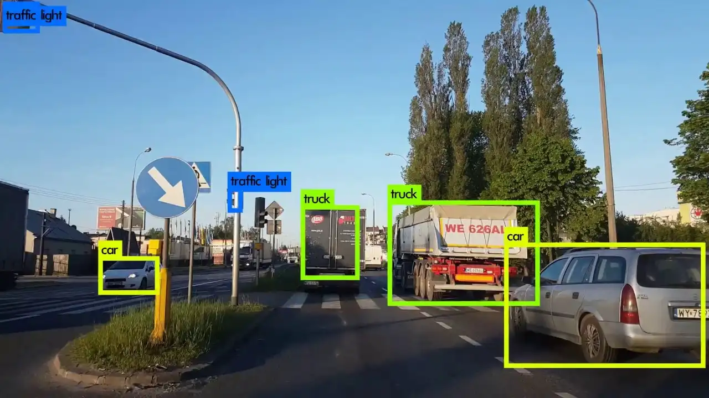

Project

Abstract
เป็นโปรเจคที่ช่วยทำให้การเข้าถึงที่จอดรถ สะดวก ปลอดภัย และรวดเร็ว ผ่านการตรวจจับป้ายทะเบียนอัตโนมัติ โดยโปรเจคนี้นำ Computer Vision (OpenCV) และ ภาษา Python มาทำงานร่วมกับการเชื่อมต่อกับอุปกรณ์ IoT/Arduino เพื่อควบคุมการเปิด-ปิดประตูอัตโนมัติ มีการนำ License Plate Recognition (LPR) มาใช้เพื่อการควบคุมการเข้าถึงโดยตรง เพิ่มความสะดวกสบาย โดยที่ผู้ใช้ไม่ต้องใช้รีโมตหรือบัตร RFID แบบเดิม แค่ป้ายทะเบียนรถก็เพียงพอในการยืนยันตัวตน และโปรเจคนี้มีฟังก์ชันในการตรวจสอบจำนวนที่จอดรถที่เหลืออยู่ และแสดงผลผ่านหน้าเว็บไซต์ให้ผู้ใช้สามารถเข้ามาตรวจสอบได้แบบเรียลไทม์ ทำให้ผู้ใช้ตัดสินใจได้ทันทีว่าจะขับรถเข้ามาจอดหรือไม่